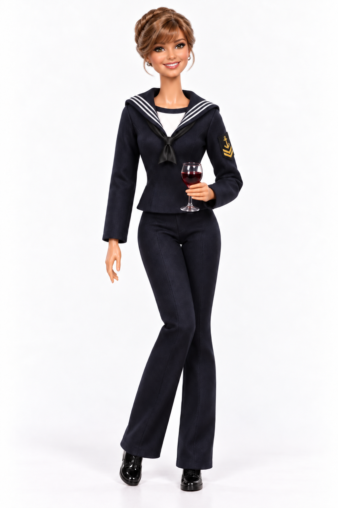

☆ 2018 - 2021: niels brock international business baccalaureate
- studied at the international upper secondary school
- developed an interest in business and international perspectives

hi! i'm nikita – i'm a 24-year-old global business engineering student at via university college and currently working as a junior test engineer at systematic.
i chose global business engineering because i never really wanted to choose between technology, business and engineering. i like understanding how different disciplines connect, and i'm especially interested in what happens when technology is used to solve actual problems.
at systematic, i work with quality assurance of critical defence systems. having previously worked with some of these systems from the operational side in the royal danish navy makes the work especially meaningful to me. i get to combine technical curiosity with an understanding of how the systems are actually used.
my time in the navy taught me a lot about teamwork, responsibility and working under pressure. those experiences still influence how i approach both work and university today.
for me, reaching the goal matters, but so does the process of getting there – good collaboration, good decisions and work that is actually worth doing.
right now, i'm especially interested in product development, problem solving and creating actual value through technology.
long term, i could see myself working with product management or maybe building something of my own. at the same time, i've become really interested in testing and quality engineering, so i'm still figuring out exactly where i want to end up.
outside work and university, i enjoy cooking, baking, going to the cinema, taking walks and spending time with my boyfriend. we also collect pokémon cards together.
more than anything, i value having a good life outside of work and spending time with the people closest to me.
see a bit of my story below: